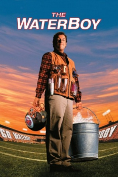

Country:United States, 90 minutes
Spoken languages:English
Genres:Comedy
Director(s):Frank Coraci
Writer(s):Adam Sandler, Tim Herlihy
Video Codec:Unknown
Number: 754


Certification:PG-13
Storyline:
Bobby Boucher is a water boy for a struggling college football team. The coach discovers Boucher's hidden rage makes him a tackling machine whose bone-crushing power might vault his team into the playoffs.
Cast:


Medium: Original DVD,
Loaned: No
Aspect ratio: Unknown